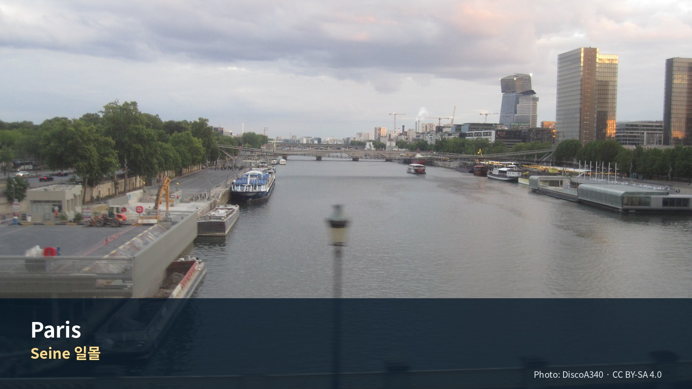
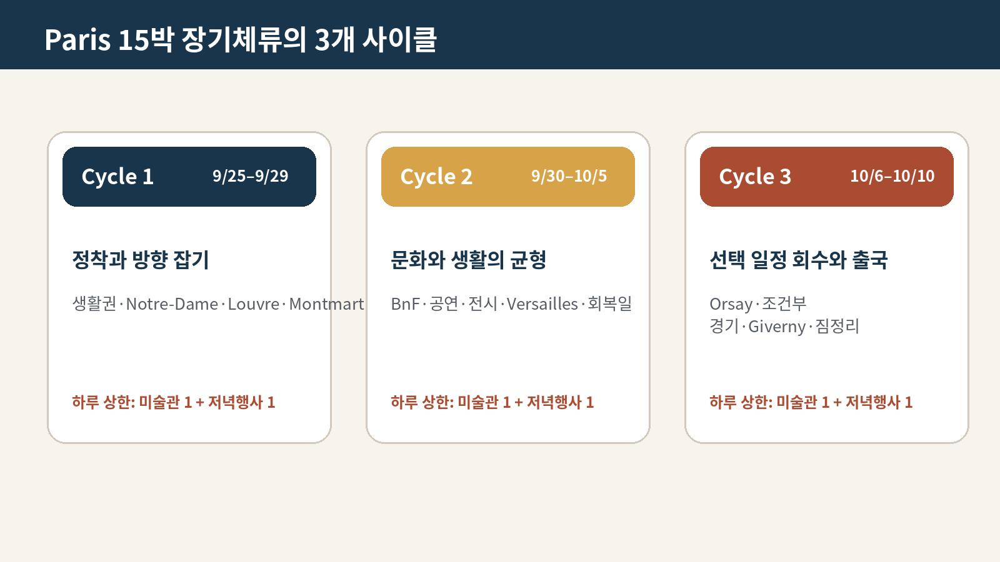

파리 15박 생활 가이드
‘한 달 살기’의 축소판 — 운동하는 아침, 문화가 있는 오후, 공연과 동네 저녁
이 체류의 역할: 파리는 이번 43일 일정·42박 여행의 마지막 도시이자 하이라이트다. 관광지를 매일 정복하는 방식이 아니라, 같은 빵집과 시장을 다시 찾고, 오전 운동과 세탁·장보기를 반복하며, 오후에는 미술관·동네·도서관을 하나씩 보고, 저녁에는 비스트로·공연·축구를 선택하는 15일짜리 파리 생활 실험으로 운영한다.
Jason·Julia 맞춤 원칙: Jason은 러닝·gym과 미술·도시 스케치를, Julia는 동네산책·시장·카페와 선택 수영을 즐긴다. Julia의 수영은 숙소 선정조건이 아니다. 아침은 숙소, 점심은 샌드위치·시장·가벼운 현지식, 저녁은 레스토랑과 숙소식을 섞는다.
전시보다 도시를 우선한다: 15박이어도 대형 미술관을 연속 방문하지 않는다. 필수 대형관은 Louvre·Orsay 정도로 제한하고, Grand Palais·Bourse de Commerce·Orangerie는 2026 특별전과 당일 컨디션에 따라 선택한다. 미술관 사이에는 시장·공원·동네·도서관·무계획 시간을 둔다.

일자
일정 한눈에이 구간을 어떻게 굴리는가Day 28 · 9월 25일 금Day 29 · 9월 26일 토Day 30 · 9월 27일 일Day 31 · 9월 28일 월Day 32 · 9월 29일 화Day 33 · 9월 30일 수Day 34 · 10월 1일 목Day 35 · 10월 2일 금Day 36 · 10월 3일 토Day 37 · 10월 4일 일Day 38 · 10월 5일 월Day 39 · 10월 6일 화Day 40 · 10월 7일 수Day 41 · 10월 8일 목Day 42 · 10월 9일 금Day 43 · 10월 10일 토